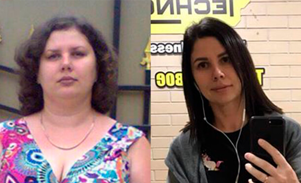
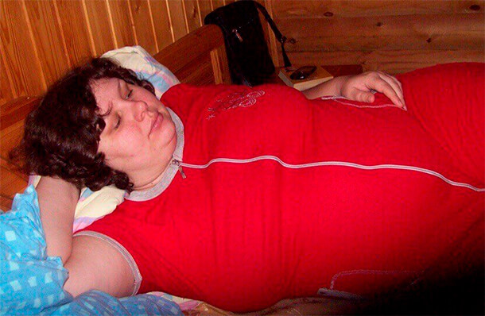
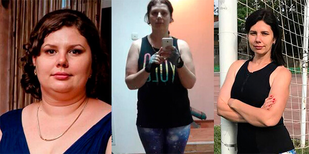
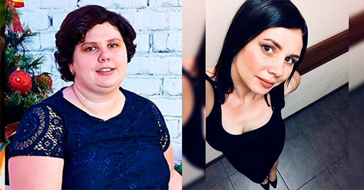
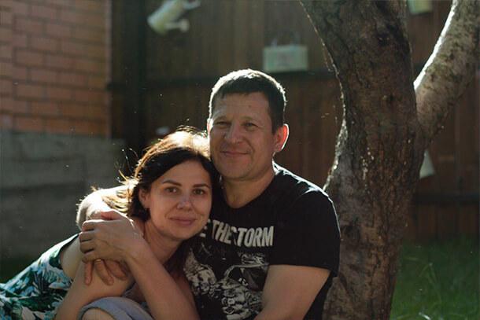

CUM SĂ SLĂBEȘTI (ÎN CAZUL MEU 43 kg) ȘI SĂ ÎNCEPI DIN NOU O VIAȚĂ NORMALĂ. LA VÂRSTA DE 33 ANI AM ÎNCEPUT DIN NOU SĂ TRĂIESC!
Faceți cunoștință, în fotografiile făcute la o diferență de 5 luni sunt eu- gazda acestui blog. Like pentru obraji:)
Am decis să vă împărtășesc istoria cum mi-a reușit (eram o grăsană) să ajung la cifra de 57 kg.
Înainte aveam o greutate normală. Schimbarea a venit după ce m-am căsătorit. Se întâmpla adesea să ne așezăm în fața televizorului cu niște sandvișuri, câteva cutii cu bere, două boluri de chipsuri și finisam cu desertul, desigur. Probabil că mulți își petrec timpul liber în acest mod. Căsătoria m-a făcut oarecum neglijentă. Am deja verigheta pe deget, de ce să-mi fac griji? Surplus de kilograme? Cântarul arăta la acel moment cifra record de 80 kg. Fleacuri! Soțul oricum mă iubește.
Greutatea continua să crească, până când am ajuns la 100 kg.
Încet, dar sigur, mă transformam într-o balenă. Acest cuvânt mă caracteriza pe deplin. În loc de 2 bărbii, eu aveam 4. În pliurile de grăsime de pe burtă aș fi putut să ascund niște bani și, cu siguranță, nimeni nu i-ar fi găsit. Corpul meu se scutura la fiecare mișcare, respiram greu. La etajul 3 urcam cu ascensorul, de teamă să nu mă sufoc.
Ne doream foarte mult un copil, dar n-a fost să fie. Ginecologii spuneau că surplusul de greutate e de vină și mi-au prescris diete stricte. Îmi dădeam bine seama că era unica mea șansă. Soțul m-a susținut- în casă nu era nici un produs interzis. Am slăbit 17 kg, primeam complimente, îmi apăruse coroana pe cap și o luamsem de la început. BUCATELE APETISANTE ȘI GUSTOASE ÎMI FĂCEAU CU OCHIUL. Greutatea a revenit la valoarea inițială.
La vârsta de 30 ani aveam probleme serioase de sănătate: colesterol, hipertensiune, inima, pancreasul, diabet de tip 2 și chiar psoriazis. Toate acestea din cauza grăsimii. Nu numai că arătam îngrozitor, dar mă simțeam la fel. Apatie totală și stare de depresie.
Relația cu soțul nu mergea prea bine. Făceam sex la un interval de câteva luni, la început încerca să mă susțină, ca mai apoi nici să nu ne vorbim unul altuia. Atunci am înțeles: NU MAI POT CONTINUA ASTFEL!
Dietele și fitnessul nu-mi conveneau. Pentru ele aveam nevoie de voință și timp. Eu nu le aveam la moment, deoarece trebuia să-mi salvez urgent căsnicia. Am căutat informații pe net, m-am adresat la un nutriționist online. I-am descris problema, explicându-i că-mi doresc un rezultat rapid și definitiv. Specialistul mi-a recomandat .
Îmi pare rău că n-am aflat mai devreme despre acest produs. este o cafea cu carbon. Detoxifiere pentru organism. Ingredientele (un tip special de carbon activ, L carnitine, lapte de nucă de cocos și Omega 3) dizolvă toxinele și grăsimea, blocând absorbția carbohidraților și oferă o senzație de sațietate pe o perioadă lungă. Este adevărat. O ceșcuță de cafea alungă foamea pentru 2-3 ore.
Făceam periodic măsurători și mare-mi era umirea, când îmi dădeam seama că volumul scade cu câte 2 cm/7 zile.
Peste o lună, cântarul îmi arăta minus 13 kg. Și nu făcusem nimic deosebit! Sincer. Am adăugat în meniu și mâncam ca de obicei: carne, paste, pește, chiar și dulciuri, numai porțiile erau mult mai mici. Entuziasmată, am mai comandat câteva cutii.
Nu vă voi obosi cu poveștiri lungi, vă las să priviți imaginile:
Într-o perioadă de 5 luni, m-a ajutat să slăbesc 43 kg. Privesc fotografiile și n-aș vrea să mă întorc în trecut. Sunt o femeie perfect sănătoasă, simt că zbor. Am fericire în ochi, o căsnicie perfectă, plină de dragoste și pasiune. Sunt bucuroasă că perioada grea a trecut. După ce am slăbit, am început un mod de viață activ. Nu ne mai ghiftuim cu mâncare, facem mai multă mișcare.
P.S. Sunt mândră de rezultatul obținut, sunt sigură că veți reuși și voi. Citind comentariile, am înțeles că subiectul ”cum să slăbești” este foarte popular și mi-am împărtășit experiența. Dacă nu vă reușește să slăbiți prin metodele standard, așa cum nici mie nu mi-a reușit, pe acest link puteți să comandați . Sunt sigură că va schimba viața spre bine.
Comentarii la articol: